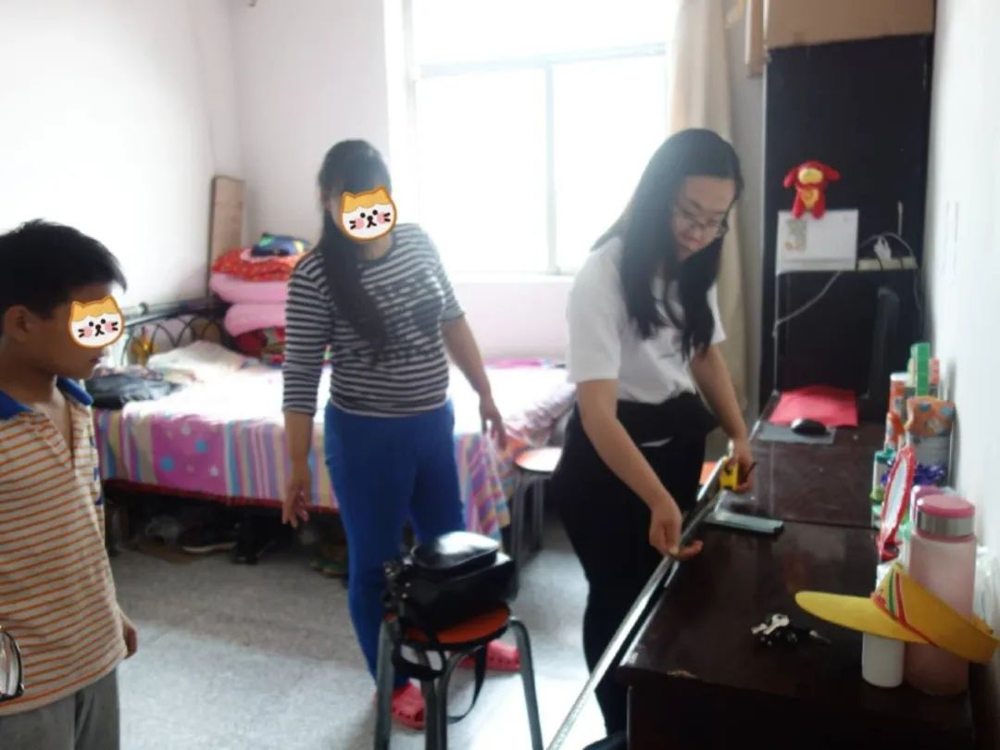
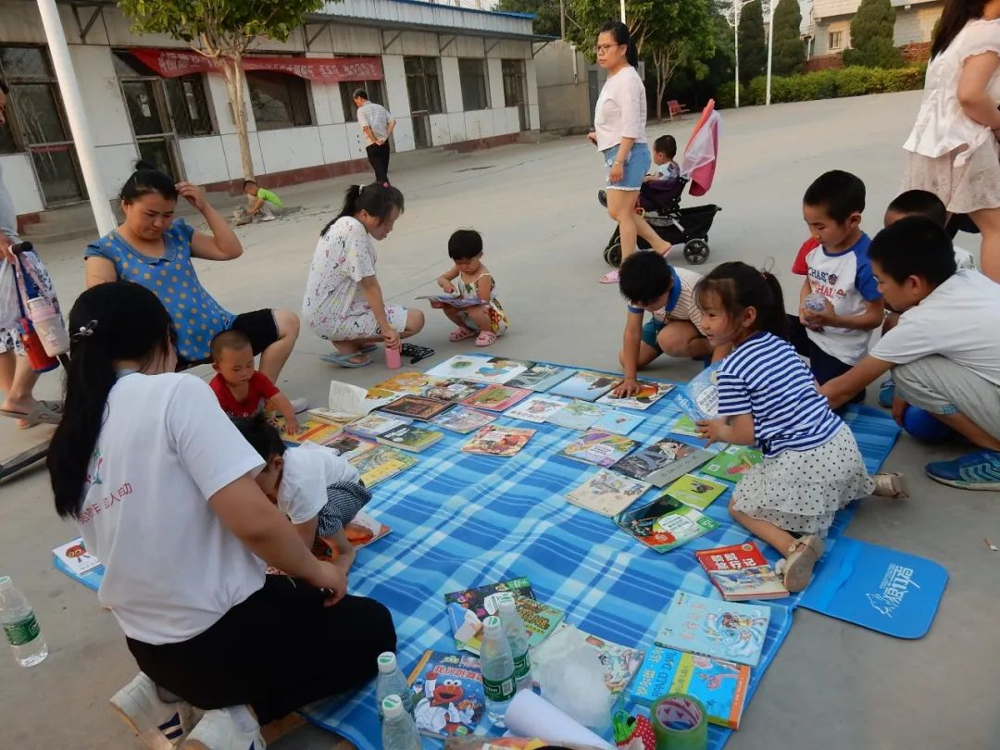
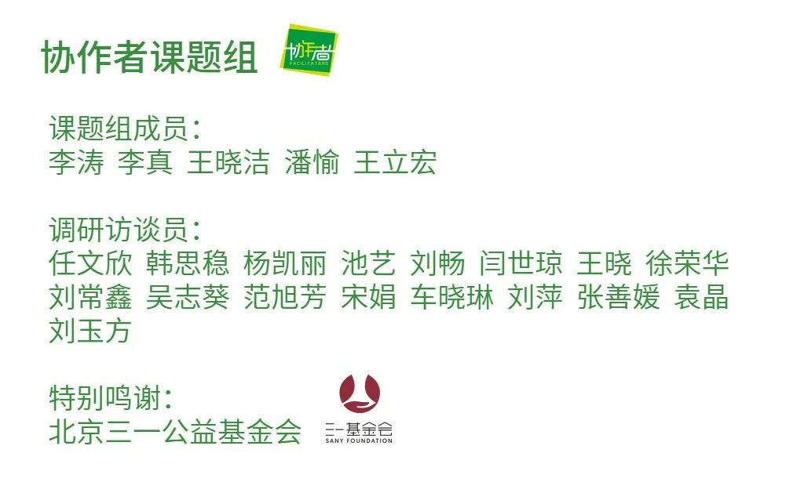

疫情下的深呼吸 | 希望能让孩子有个好一点的未来
原文链接 备份链接 本文是协作者在“农民工抗疫救援行动”中，针对困境农民工家庭开展的个案访谈之一，旨在快速识别疫情中的脆弱人群及其需求，为疫情防控和救援工作提供参考，我们整理出来与你分享。 疫情下的深呼吸 ——困境农民工家庭个案实录（八） …
本文是协作者在“农民工抗疫救援行动”中，针对困境农民工家庭开展的个案访谈之一，旨在快速识别疫情中的脆弱人群及其需求，为疫情防控和救援工作提供参考，我们整理出来与你分享。
疫情下的深呼吸
——困境农民工家庭个案实录（七）
没有收入，下个月就不知道该怎么生活了
口述者：晓琴（化名）
打工所在地：北京
编者注：晓琴,51岁，河北省张家口人，初中学历。在一家奶茶店做服务员，每个月工资2800块左右。丈夫身体不好，不能做重活儿，去年腊月开始就失业了，原计划过完年回北京重新找工作，但至今无果。儿子在北京读初一，是协作者的助学对象，也是协作者社区自助图书馆的小馆长。
我是2012年来北京打工，当时在老家找不到其他工作，就想来北京试试，换过很多工作。去年6月我开始在一个地铁站的奶茶店工作，从那边回租住的村子比较方便，所以就一直做到现在了。我老公去年在一家电子厂上班，稍稳定点，给我缓解了困难，一个月有3000块钱的工资。但那个电子厂因为污染，不让开了，厂子也搬到石家庄，老公去年12月就没能再上班了。我老公岁数大了，周岁53岁了，个子矮，身体不行，找保安人家说身高不够，不要。其他的工作也不好找，只能等病毒过去，回城里来了再找找。
孩子跟他爸是1月18号回老家的，当时还没有传这个病毒的事情，等我20几号回去就已经很严重了。他爸就天天不放心，催我 ：“哎呀，那个病毒太严重啦，你快回来吧，路上多戴一层口罩。”我们那里到老家比较快，我们每年都回家。有公交车15块钱就能到我们老家县城，再转个公交车12块钱。回老家的路上我看有70-80%的人都戴着口罩，我为了保险，戴了两层，就是这种蓝色的口罩，盒子上写着“一次性医用外科口罩”。

▲ 晓琴家周围居住的都是外来人口，从左前方红门进入，一层二层都是一间间出租屋，晓琴一家四口住在一间屋里（拍摄于2018年6月）
合同，一般老板没让签就不签了
现在家里人除了他爸身体不能做重活儿，我们都还可以。主要是文化程度不高，干不了别的什么工作。在城市里，生病了一般会去附近的诊所，小病没去过医院。我们是私人老板，没有签合同，也没有保险。我们就只有新农合的保险，之前考虑过商业的保险，一个人一年要5000多，就没上，主要是没有经济能力。
对于社会保障政策，我这边了解的是农民工要签劳动合同，企业要给我们上保险。但实际工作中不好实现，换工作勤，不稳定，变数还是比较大的，一般老板不让签，我们也没办法，就不签了。

▲ 协作者社会工作者去晓琴家了解家里的近况（拍摄于2018年5月）
疫情防护，“照葫芦画瓢”呗
家里现在有口罩、消毒液，每天我第一件事就是刷刷抖音、微信朋友圈，基本都是通过这些了解最新的病毒信息，上面能看到视频，还有数字，文字的解释，最直接。然后就是“照葫芦画瓢”呗，用消毒液拖一遍地，然后开窗通风，也了解一些信息，还是有用的。
我们外出的话，就是戴口罩，大人的口罩有，孩子就不行了，感觉大人的口罩带着有点大，我就给他耳朵后面挂绳上挽个疙瘩，这样能贴紧一点，不过还是觉得不安全，也只能这样了，小孩儿的我们这没有卖的。大人的N95那种太贵了，买不起。
（这个确诊的病例）刚开始的时候就几例，后来一下子几十例、上百的发展，太快了。我们开始觉得太吓人了。回张家口之后，农村老家里设了路障，不能回，北京停了车，也不能回，我们就只能在县城家里待着了。老家有个微信群，每天都能看到村里发的信息，感觉还是比较严的。我们现在在的这里，要去超市，先量体温，门口拉了横幅，大街上也都是横幅，都在说为了你的健康，别人的健康，不要串门、聚会这些。

▲ 社会工作者量家里的桌子尺寸，为待建的图书馆预留位置
昨晚跟在北京的朋友视频，他们本来老家就没什么人不想回，后来想回发现回不去了，我就劝她在北京待着吧，哪里都别去，出来了像我一样，北京就回不去了。我们住的地方那里外出打工的人比较多，路口有路障，有人监管，其他的防护不清楚。
没有收入，下个月就不知道该怎么生活了
回来后，目前生活上没有太多影响，最着急的是怎么回打工的地方。我们看到网上说推迟假期了，我问我们老板，老板说初五再定，后来再到初八上班，我想着能挣一个是一个，初七就想办法回北京了。因为如果我们开始工作了，我赶回不来，晚到几天就得扣几天的工资。时间短了行，要时间长了，连工作都没了。他爸也是，得赶紧找工作，要不我们都没有经济来源，每天吃、喝都得花钱吧。谁知道疫情严重，我回来后，老板让等通知，这已经推迟了三次了，最新说是到21号上班。也说不准，得看这疫情能不能过去吧，毕竟我们是餐饮行业，给人服务的，老板也是害怕。

▲ 晓琴的孩子小峰成为小小管理员后，几乎每周到村里的小广场开展公益阅读活动（拍摄于2018年6月）
还有就是孩子上学，通知说延期，不知道延期到什么时候，那要不通车，我们怎么回去。回老家的时候以为没几天就回去了，就没拿作业，这下可好，啥时候能回都不知道。孩子每天都念叨作业完不成，老师自己出的卷子也不能网上找。他回来的时候也没有想会是这么长时间，也就带了一本小说《骆驼祥子》，其他的书都没带。
像我们这样的家庭，肯定是经济上最受损了。一个月没有收入，下个月就不知道该怎么生活了，要实在没办法了，就只能靠娘家来接济了。我们就希望能赶快顺利回北京，我能顺利返回工作岗位，我老公能找到新工作，孩子顺利上学。我也担心自助图书馆的活动年后不好开展了，人多有危险，家长不知道还愿不愿意看，到时候书籍我们也得做好消毒措施。
这些天，我只在到的那天出去买了点白菜、粉条，两个茄子，几袋榨菜，家里还有之前买的米、面。我贫血，但也不敢买其他菜，菜太贵了，我就凑合吃点。
我家这个月的房租、水电费用，房东已经算出来了，但我们现在没有工作，没有收入，手里的一点钱也不敢交这些。交了，吃饭就是问题，孩子一开学学费也不够了，就省着这点钱给孩子交学费。
他爸担心我自己在北京，也想过来，但是车还没有通呢，私家车人家也顾忌，其实不愿意拉，我们能理解。再说来了花费大，在老家能省点，我也没让他和孩子过来。
社会工作者手记
晓琴惦记着自己的工作，初七就一个人回来等着上班。2月22日协作者启动救援物资发放时再次联系她，她说21日上了一天班，又通知说不开工了，现在还在家里等着。这几天，老公与孩子也回来了，正在家里自我隔离。她担心日子这样下去，家里会断了经济来源，担心老公没有工作可以做，担心家里的自助图书馆不能正常开放……像大多数我们接触到的困境农民工家庭一样，疫情之下，这些踏实、勤劳、本分的人，生活在巨大的不确定性和焦虑中。
服务建议
当下：
1.及时了解家庭成员隔离与生活情况，以及下一步的生活规划；
2.普及新型冠状病毒防疫知识；
3.协助其了解就业、开工等情况，尽可能帮助失业的爸爸找到相应的工作，增加家庭的经济来源；
4. 定期跟进孩子学校的开学事宜，帮助孩子的学习跟上进度。
长远：
1.结合在其家中的协作者困境儿童自助图书馆开展的活动，提供家庭就业能力培养服务，提升家庭就业水平；
2.链接陪伴天使志愿者，为孩子提供课业辅导和陪伴支持，同时支持孩子持续开展自助图书馆运营服务活动，在管理中提升孩子助人自助的能力；
3、继续提供助学救助。
（更多个案故事与个案报告见微信公众号“协作者云社工”，转载请在公众号后台留言与协作者联系。）

感谢每一位协作者之友。在这个非常时期，即使人与人之间必须要保持距离，总还有生命的希望和力量迸发在我们心间。谢谢有你们！
支持协作者，
你可以加入协作者之友，成为协作者月捐人

查阅往期链接，了解更多协作者抗击疫情信息：
疫情下的深呼吸|新冠肺炎疫情中困境农民工家庭需求分析报告（摘要）
协作者致打工朋友的一封信（二）| 疫情期间，如何面对返城务工

协作者云社工

长按二维码，识别关注协作者云社工
说明：“协作者云社工”微信公众号发布内容，除特别说明外，均为原创，使用文中内容请注明出处及作者，否则将追究相关责任。
原文链接 备份链接 本文是协作者在“农民工抗疫救援行动”中，针对困境农民工家庭开展的个案访谈之一，旨在快速识别疫情中的脆弱人群及其需求，为疫情防控和救援工作提供参考，我们整理出来与你分享。 疫情下的深呼吸 ——困境农民工家庭个案实录（八） …
原文链接 备份链接 本文是协作者在“农民工抗疫救援行动”中，针对困境农民工家庭开展的个案访谈之一，旨在快速识别疫情中的脆弱人群及其需求，为疫情防控和救援工作提供参考，我们整理出来与你分享。 疫情下的深呼吸 ——困境农民工家庭个案实录（九） …
原文链接 备份链接 本文是协作者在“农民工抗疫救援行动”中，针对困境农民工家庭开展的个案访谈之一，旨在快速识别疫情中的脆弱人群及其需求，为疫情防控和救援工作提供参考，我们整理出来与你分享。 疫情下的深呼吸 ——困境农民工家庭个案实录（五） …
原文链接 备份链接 本文是协作者在“农民工抗疫救援行动”中，针对困境农民工家庭开展的个案访谈之一，旨在快速识别疫情中的脆弱人群及其需求，为疫情防控和救援工作提供参考，我们整理出来与你分享。 疫情下的深呼吸 ——困境农民工家庭个案实录（六） …
原文链接 备份链接 上游产业链供应受阻、市场需求不足、现金流日益“吃紧”、防疫能力较弱、召回员工风险高等问题，使得中小微企业复工之路，显得困难重重。 记者 | 王晓珊 实习生 | 丁宁 编辑 | 盛倩玉 茅台镇一家酒企老板李磊，这几天愁 …